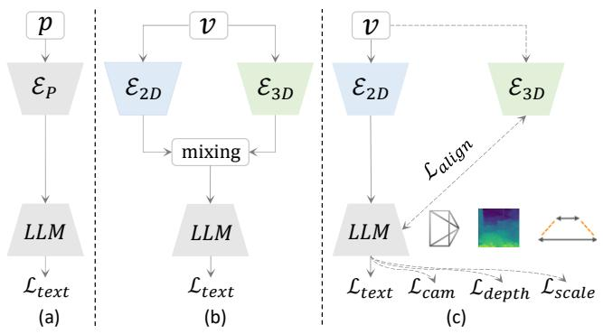

Learning Geometric Representations from Videos：通用视频预训练正在从语义帧理解转向几何一致性，GeoVR 是“视频自监督/蒸馏获取 3D latent”的明确样本
在缺少大规模 3D 数据的条件下，把预训练 3D foundation model 的几何知识蒸馏进 MLLM 表征。
Learning Geometric Representations from Videos for Spatial Intelligent Multimodal Large Language Models Haibo Wang, Lifu Huang；机构信息 arXiv 元数据未列出。 arXiv 原文链接
编号2606.05833优先级P1类别Visual SSL / representation会议arXiv方法GeoVR 用纯 2D 视频序列学习几何 representation，通过 camera pose、depth、metric scale 与 3D foundation feature distillation 重塑 MLLM 内部语义 latent space。来源arXiv / OpenReview
先说结论。通用视频预训练正在从语义帧理解转向几何一致性，GeoVR 是“视频自监督/蒸馏获取 3D latent”的明确样本。 在缺少大规模 3D 数据的条件下，把预训练 3D foundation model 的几何知识蒸馏进 MLLM 表征。
Figureure 2 · Framework of GeoVRFigure 2. Framework of GeoVR. During training, alongside the standard next-token prediction $( \mathcal { L } _ { t e x t } )$ , the intrinsic latent space is restructured via: camera pose estimation $( \mathcal { L } _ { c a m } )$ , dense depth prediction $( \mathcal { L } _ { d e p t h } )$ , metric scale calibration $( \mathcal { L } _ { s c a l e } )$ , and geometric representation alignment $( \mathcal { L } _ { a l i g n } )$ from a frozen 3D teacher $( \mathcal { E } _ { 3 D } )$ . All auxiliary heads and the $\mathcal { E } _ { 3 D }$ branch are discarded during inference.这张图概括 Learning Geometric Representations from Videos 的整体方法流程。阅读时先看模块之间传递的训练信号，再看作者如何把目标拆成可优化的子问题。

Figureure 1 · Comparison of different paradigmsFigure 1. Comparison of different paradigms. P and V denote point clouds and RGB video. $\mathcal { E } _ { P } , \mathcal { E } _ { 2 D } ,$ , and $\mathcal { E } _ { 3 D }$ denote point cloud, 2D vision, and 3D foundation encoders, respectively. (a) relies on scarce 3D data, limiting scalability. (b) patches external 3D features onto 2D tokens, causing inference overhead. (c) (ours) restructures the latent space via training-only geometric constraints.这张图/表用于判断 Learning Geometric Representations from Videos 的实验收益来自哪里。重点看替换、消融或跨模型设置下趋势是否一致，而不是只看单个最高分。
核心问题
通用视频预训练正在从语义帧理解转向几何一致性，GeoVR 是“视频自监督/蒸馏获取 3D latent”的明确样本。
方法拆解
GeoVR 用纯 2D 视频序列学习几何 representation，通过 camera pose、depth、metric scale 与 3D foundation feature distillation 重塑 MLLM 内部语义 latent space。
主要贡献
在缺少大规模 3D 数据的条件下，把预训练 3D foundation model 的几何知识蒸馏进 MLLM 表征。
实验看点
摘要称在空间推理 benchmark 上达到 SOTA，并显示内部表示具备更强 3D awareness。